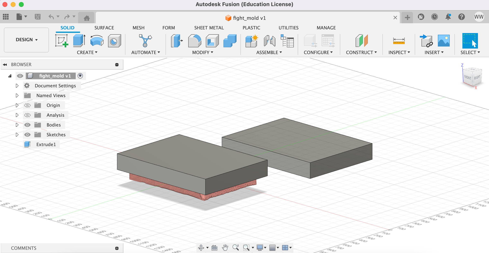
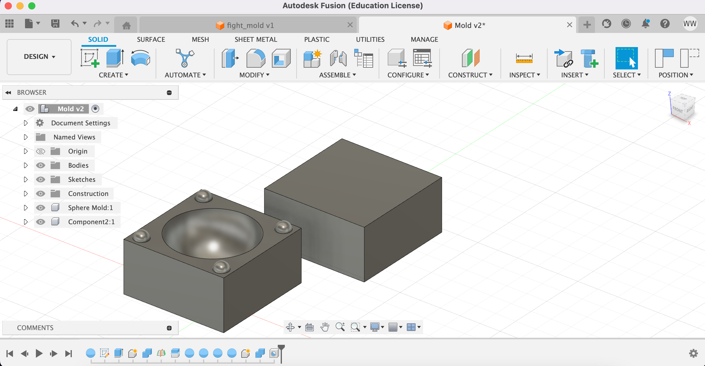
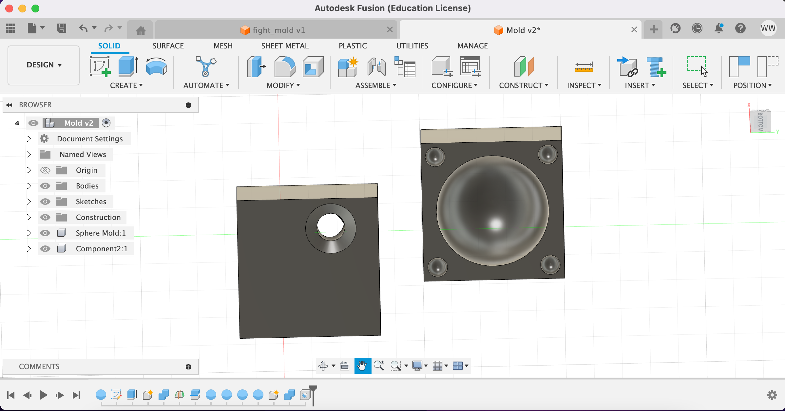
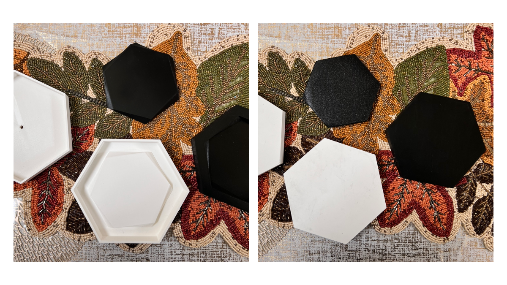
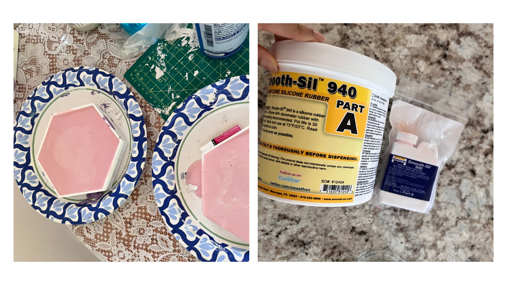
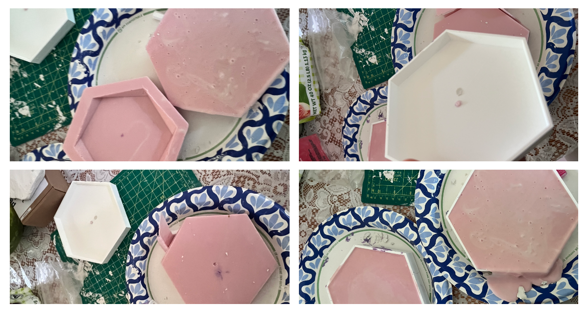

Origionally, I thought "mold of a mold" meant finding a mold on Thingiverse
and making a CAD mold of it. I chose a soap mold and ended up printing a brick
for my test print. While I followed of tutorial of a two part mold, I did not
print them as seperate pieces.
I tried again, this time creating a
mold of a sphere but stuggled with the leveling of my 3D printer and was unable to print.



Thingiverse Mold
I used Thingiverse to print coasters for my final project
and used those prints for my new, two part mold. I didn't know
what I was doing, so I just started doing something.
I
had two sets of prints: a base shape and the container for it (black) and
an angled mold with a container for it (white). For the purposed of this assignment,
this would suffice as a two part mold - or so I thought.

Casting Round 1
I greased up my molds and cast, only to find my plaster stuck into
the black mold. For the duration of the assingment, this was useless
and I ended up throwing it away.
For the white molds, I cast them, realized I created a brick and a mold.
Casting Part 2
Since I didn't know what I was doing the first time around, I did
the same thing again hoping for a different result.


When that didn't work, I decided to create a makeshift,
two-part mold by using two molds casted from the same peice and
laying them on top of eachother. What I ended up with is a coaster
of double thickness and it looks like two seperate pieces were
glued together when they were, in fact, plastered as one. I will take the L on this one.